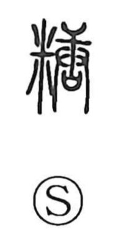

糖

Kun: | On: tou
sugar ・ sweetness ・ confectionery
Explanation
A phono-semantic character: the semantic element 米 evokes grain and sweetness, while 唐 functions as the phonetic, giving the on reading tō. There is also an older form 餳 written with the food radical and the phonetic 易/昜; the same phonetic lineage appears in 湯 (tō, hot water). In earlier usage it referred to ame—sweet candy—but in later Japanese it came to mean refined sugar, especially from sugarcane, as in tōbun (sugar content) and seitō (sugar production). In confectionery it names decorative candies such as tōka and tōryū, also known as konpeitō.